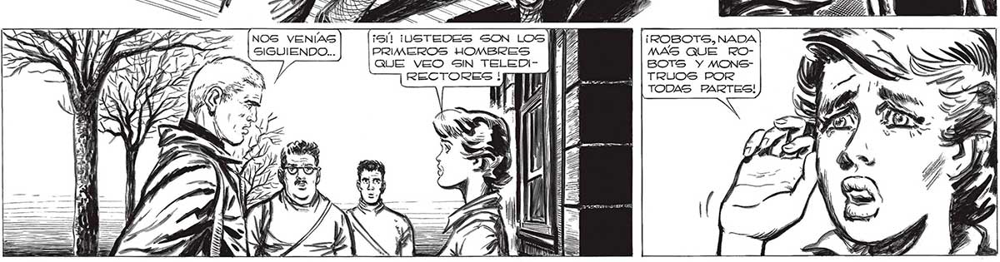

TRANQUILA, NO | IV! ! / h Y) h / Y Y y y / / / le > ' =d <A A Y e da a y Y 2 Y SINO HS j 4 a a Fiz = é S A ' AL 7, A : | WAY AE y ( s y y AD , j S yes ! a 1 ; . S Sy ha IN > 7 Ú ES AA N 9) N , NADA ¡ROBOTS SSI NE NO NON 1141/14/47: O 20 NY 99 q ) mE ER 0 tj ==) ( = (Y A ¡5 NOS VENÍAS SIGUIENDO, MAS QUE ROTODAS PARTES! BOTS Y MONSsa = WE PS ; Ulla ! O Li dEU Ll Z Y vo oK U Y (Y U = O
